Unlike a car that emits fuel through its exhaust pipe, Pollution caused
by internet is not direct.
Internet carbon footprint is mainly a result of the power required to keep
its infrastructure running. Mobile phone antennas, the devices we use to
access the internet, and data centres all require enormous amounts of
electricity. This electricity can come from renewable sources, but it often does not.
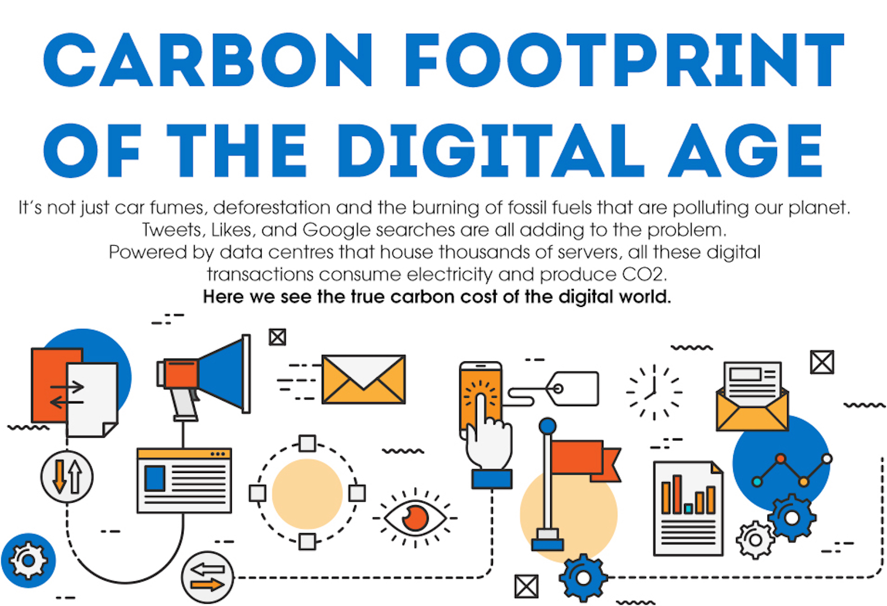
Data centres are the second most power-hungry elements of the internet,
after devices. To get an idea of the energy needs of data centres, Facebook
is building one in Prineville, Oregon that will consume around 78 megawatts
of electricity, equal to around 64,000 homes.
The report “How Clean is Your Cloud?” found that 55.1% of the electricity used
by Apple servers is generated by coal plants, as is 49.7% of the energy used
by IBM servers, and 39.4% in the case of Facebook servers. These considerable
figures entail thousands of tonnes of carbon dioxide emitted into the atmosphere
and the dirty air that goes with it.
Statistics regarding Internet Pollution
The carbon footprint of our gadgets, the internet and the systems
supporting them account for about 3.7% of global greenhouse emissions,
according to some estimates. It is similar to the amount produced by the
airline industry globally, explains Mike Hazas, a researcher at Lancaster
University. And these emissions are predicted to double by 2025.
One study estimated that 10 years ago, the average Australian internet user
was responsible for the equivalent of 81kg (179lbs) of carbon dioxide (CO2e)
being emitted into the atmosphere.
In the US, data centres are responsible for 2% of the country’s electricity use,
while globally they account for just under 200 terawatt Hours (TWh).
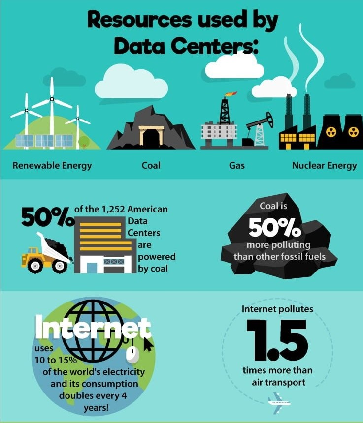
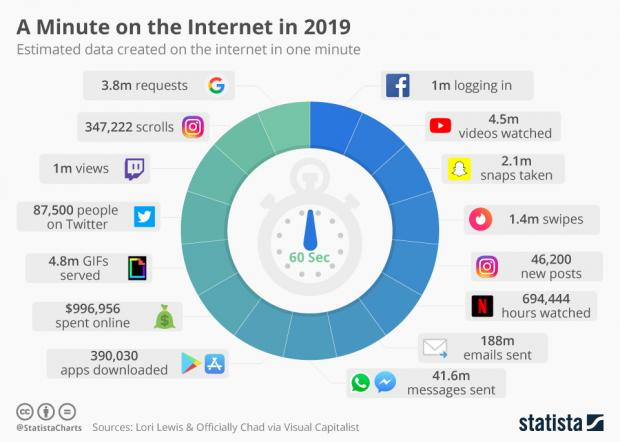
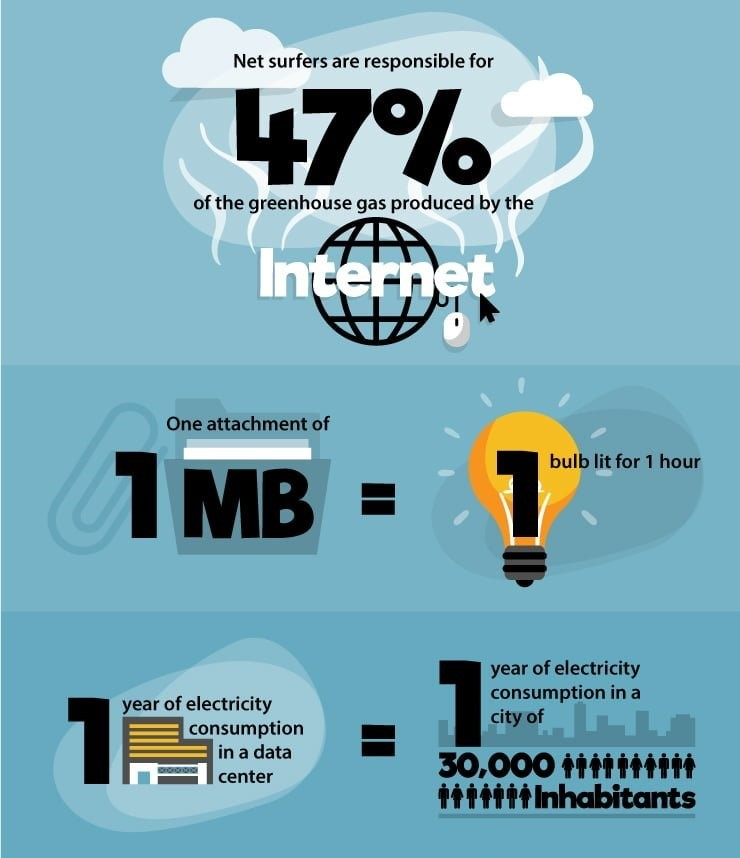
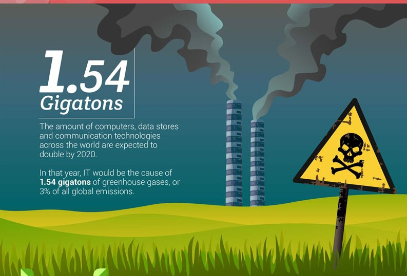
If every adult in the UK sent one less “thank you” email, it could save 16,433
tonnes of carbon a year – the equivalent to taking 3,334 diesel cars
off the road, according to energy company, OVO.
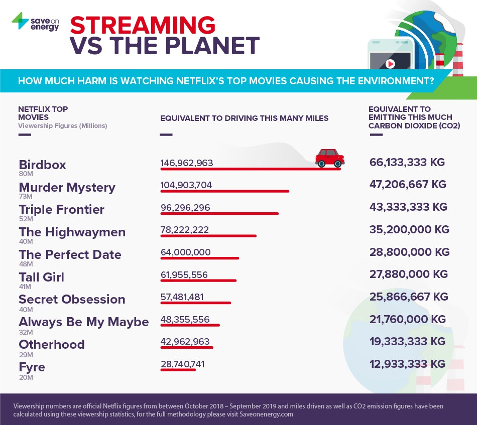
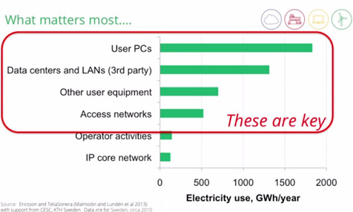
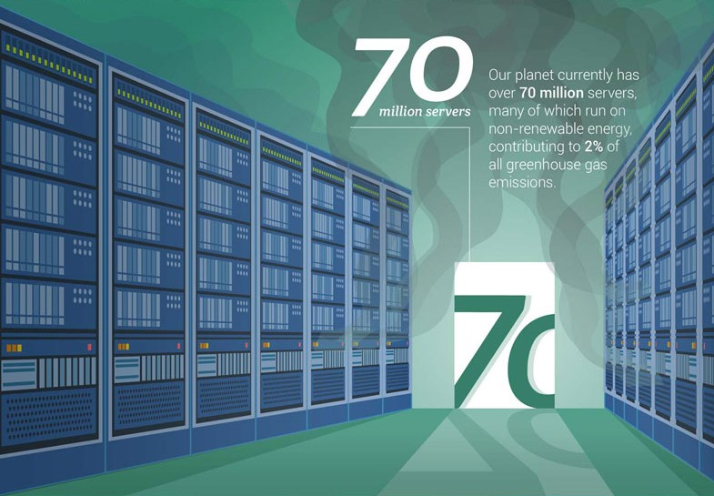
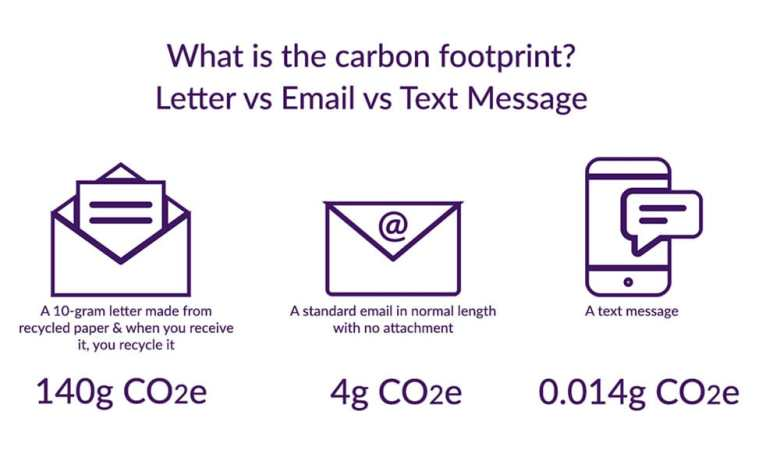
Regardless of the search engine you choose, using the web to find
information is more sustainable than browsing in books. In fact,
a paperback’s carbon footprint is around 1kg (2.2lbs) CO2e, while
a weekend newspaper accounts for between 0.3kg (10oz) and 4.1kg
(9lbs) CO2e making reading the news online more environmentally friendly
than poring over a paper.But you could read a lifetime of paperbacks –
2,300 to be precise – for the same carbon footprint as a flight from London to
Hong Kong, so don’t feel too guilty for reading the next best seller.
What can I do to reduce My Digital FootPrint?
1. Adjust power settings :
Set your computer to go into sleep or hibernate
to conserve energy when you’re taking a break. Shutting down your computer and
turning off your monitor and printer altogether when they’re not in use will save even more.
2. Block video auto play.
3. Use your browser better
Be precise when you search. If the keyword you use is the right one, you will save the
energy needed to travel about 40km (24.8 miles) by car.
Write directly in the address bar of the browser—not in the search engine— when you go to visit a page that
you have visited before. You will be directed straight to the website, which prevents your search from
through the search engine and/or data centres.
Use bookmarks to avoid repeating identical searches.
Don’t forget to close the tabs you’re not using.
4. Offset your digital carbon footprint
Ecosia is a search engine that funds tree planting from the profit it makes through online searches.
In fact, Ecosia estimates that Firefox users have planted 20,000 trees, offsetting up to 960,000 pounds
of carbon emissions per year.
5. Manage Your Emails Better (Without Necessarily Deleting Them)
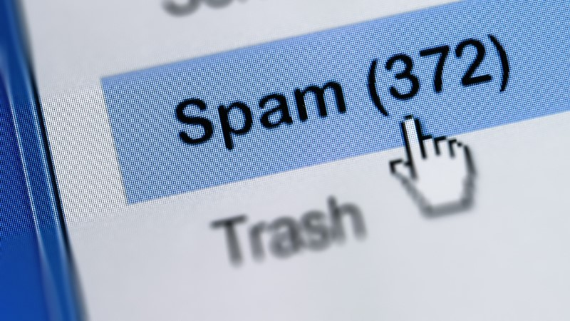
Send fewer emails and limit the number of recipients;
Write emails in text format rather than HTML (12 times less heavy and therefore less energy consuming);
Avoid attachments and email signatures, especially images that weigh down mailings;
Unsubscribe from the newsletters you’re no longer reading;
6. Get bored
That’s right. Instead of turning to your phone every time you have a minute, daydream, people-watch or listen to
life happening around you instead. Not only will you do a good deed for the environment (albeit a tiny one),
you’ll do a good deed for your brain. You might find a bit of brilliance in your boredom.
7. Forget about HD (high definition)
Try watching your favourite series in low resolution. When streaming, you consume between four to ten
times less energy than watching in high definition. It’s not easy, but it’s for a good cause!
And Finally….
Don’t forget to Use Our Chrome Extension Internet FP to calculate your daily digital footprint,
Set limit and track your no of pages visited, and try to use only those websites which are rated
as Green Sites by us.
What Steps Companies have taken to reduce their Carbon Footprint
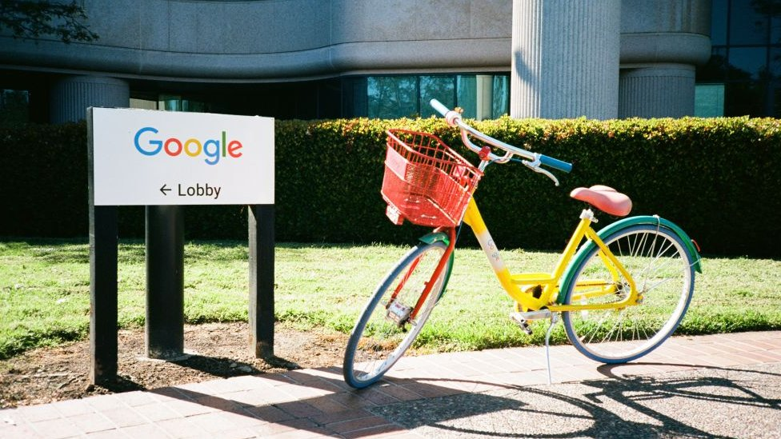
In March 2013, Apple announced that all of its server centres now work with renewable
energy, even though this announcement is a bit misleading as part of this target is being
achieved through the purchase of carbon credits to offset the nuclear and coal-fuelled
electricity used by some of its centres. The company has also built two solar energy plants
in Maiden (North Carolina) to meet the needs of its server plants in the area. In addition,
it is building a data centre in Prineville, Oregon, that will run on a mix of solar,
hydroelectric, wind and geothermic energy.
Meanwhile, Facebook, is building a data centre in Iowa that will run entirely on wind power,
which is expected to open in 2015. The company has set itself the target of powering its data
centres on 25% renewable energy by 2015. In 2011, Facebook launched the Open Compute Project,
an initiative through which to share its data centre management information and know-how in
order to encourage industry best practices and help others to maximise their efficiency.
Other measures that can be included for a sustainable website is optimizing the servers
and data centres with more efficient and sustainable methods of storing and processing
information. Carbon Offset is also a best method to reduce
Carbon footprint if implemented effectively.
Some Claims and targets of Tech Giants regarding their efforts to become carbon neutral
Google says it has wiped out its entire carbon footprint by investing in "high-quality carbon
offsets".
It became carbon-neutral in 2007 and says it has now compensated for all of the carbon
it has ever created.It also aimed to run all of its data centres and offices on carbon-free
energy by 2030, chief executive Sundar Pichai has announced.
Other large technology companies have also committed to reducing or eliminating their carbon use.
In January Microsoft revealed plans to become "carbon negative" by 2030
In July, Apple announced a target of becoming carbon neutral across its entire business and manufacturing supply chain by 2030
Amazon has set a 2040 target to go carbon neutral
Features of our Internet FP Extension
Key Features of Internet FP :
First Ever Chrome Extension with real time carbon footprint calculator
along with grey or green rating of a website.
Know your daily digital footprint with absolutely zero cost.
Its as simple to use with clean and simple interface.
Calculates the foot print of almost every website.
Has an option to set limit to your daily carbon footprint.
Tracks even the number of pages you visit.
You can even learn about how does pollution is caused by internet in the most simplest way possible.
Helps you to Know how you can actually reduce your digital footprint.
To know more about how the carbon footprint is obtained for each website, Click HERE